Lays out a four-phase framework (product requirements, system design, evaluation/monitoring, cost-latency-reliability optimization) worked through a concrete health-insurance claims-review example, including which AI design pattern (RAG,...
The talk's four phases run left to right: define the problem and constraints, pick the simplest system design, evaluate it, then optimize cost and reliability only after accuracy holds up (ours).
“the moment you're building something real, something other people depend on, something with real consequences, just ship it is actually kind of dangerous”
said at 01:02“defining the product requirements, the system design, and evaluate criteria so you can be confident that your AI coding buddies are building the right thing”
said at 01:33“It should not prescribe what the system is going to be, whether it's going to be an agent, a multi-agent system, something else.”
said at 03:38“Medical reviewers at MDB Health spend an average of 2 days processing claim review requests, which is four times the industry standard for non-urgent cases, and 12 times the industry standard for urgent ones.”
said at 04:08“Any denial decisions must be uh reviewed by a human reviewer. So, there's cases which you can't fully automate with AI.”
said at 05:41“it can be tempting to jump straight to building an agent. There's so much hype around them, or let a coding agent decide what the system architecture should look like”
said at 11:56“start with the simplest design, evaluate it, find gaps during the evaluation, and iterate from there”
said at 12:28“semantic caching could be useful to expedite decisions based on uh similar claims from the past”
said at 26:33“Think deeply about your product's requirements before having AI generate any code. The product spec is the hard part now, it's not the code anymore.”
said at 27:04The framework is generic enough to reuse as a pre-build checklist for any AI feature, but the claims-review example glosses over how contested 'solution-agnostic' problem statements are in practice -- stakeholders often arrive already committed to 'build an agent' (ours).
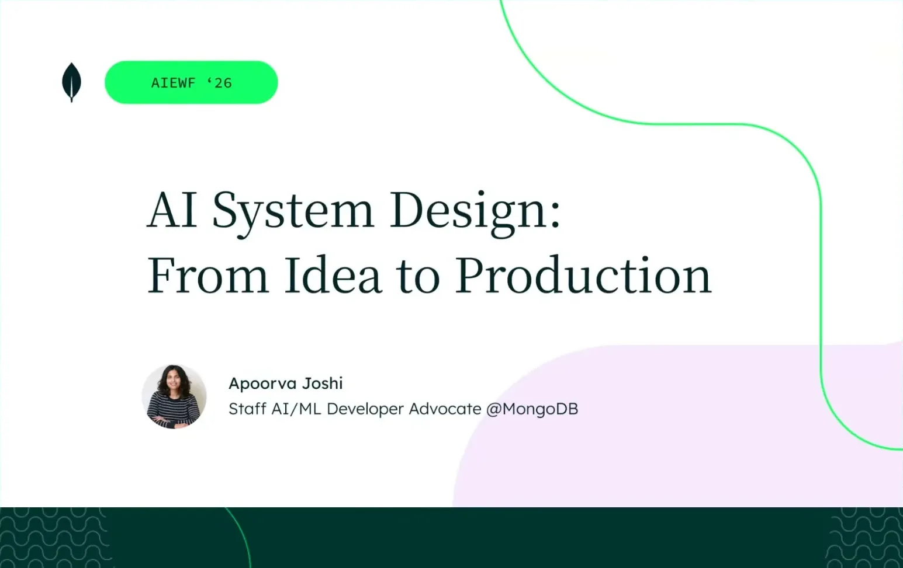
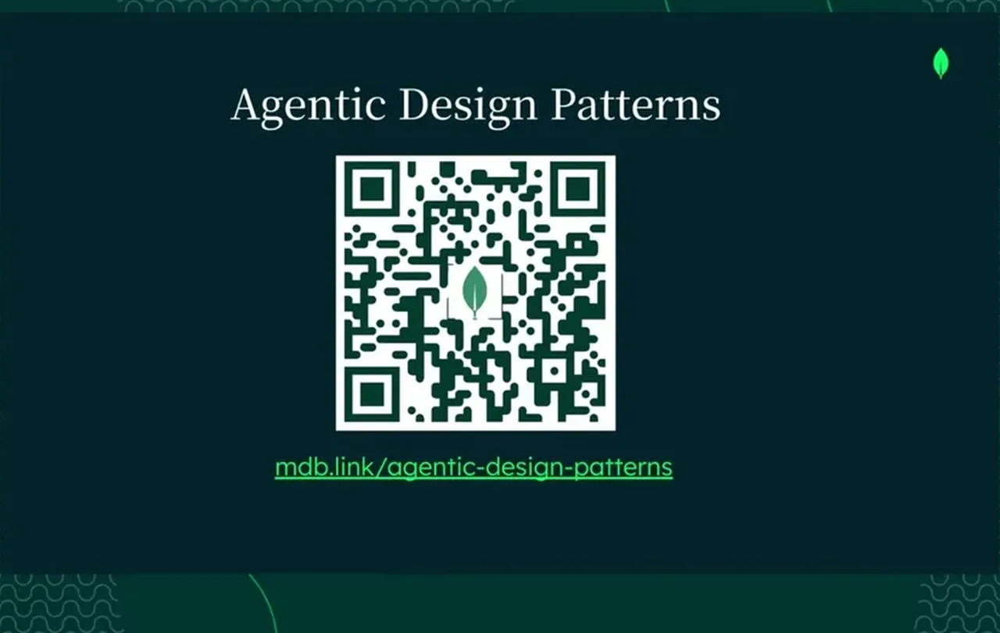
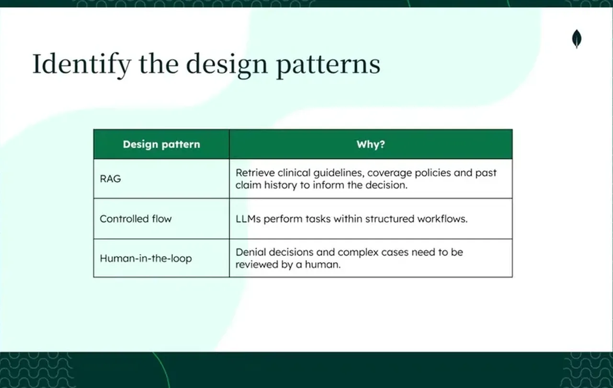
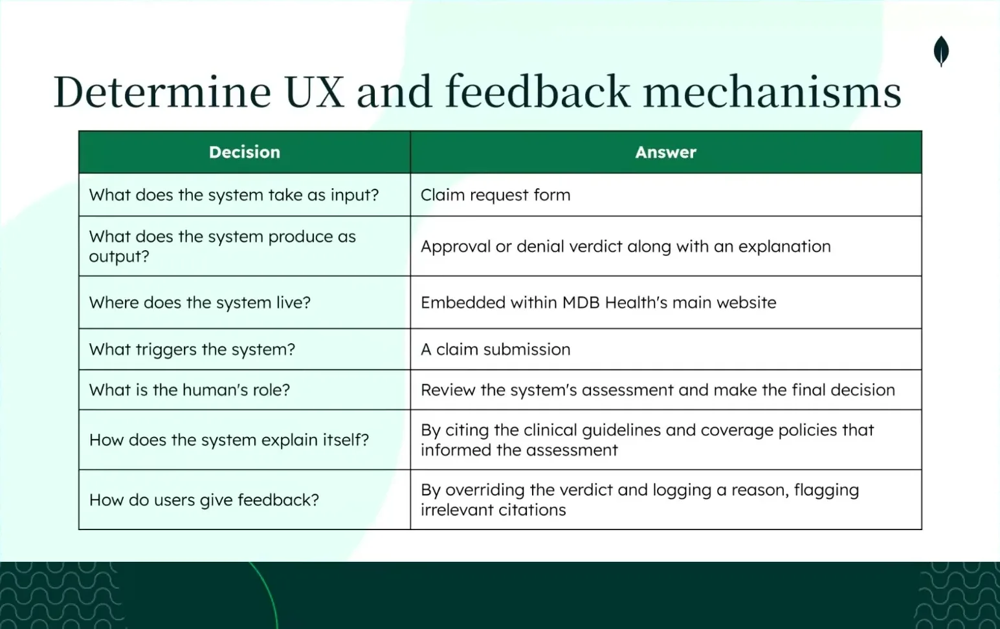
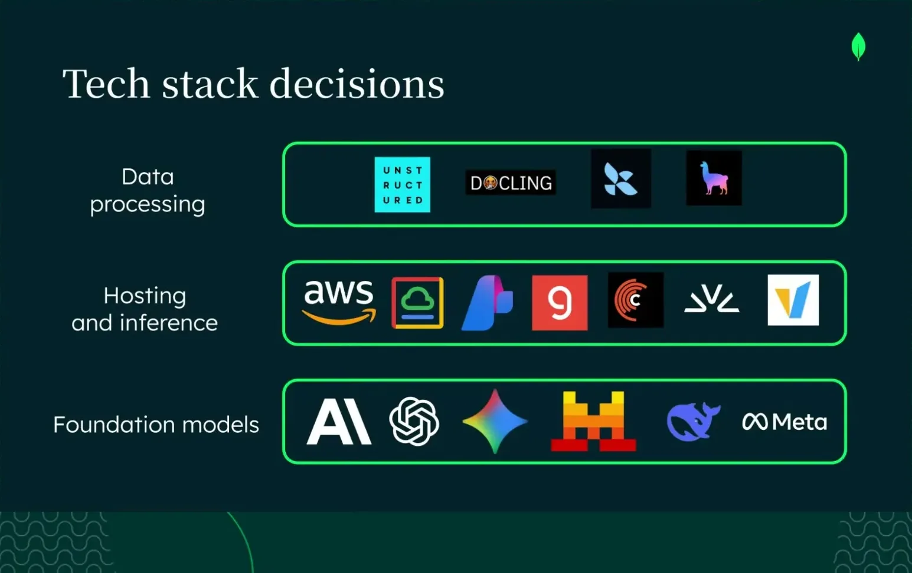
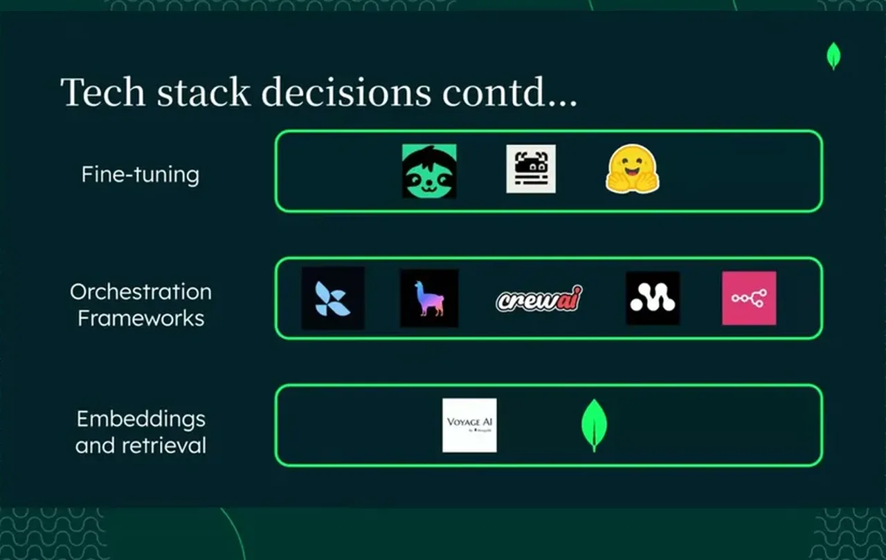
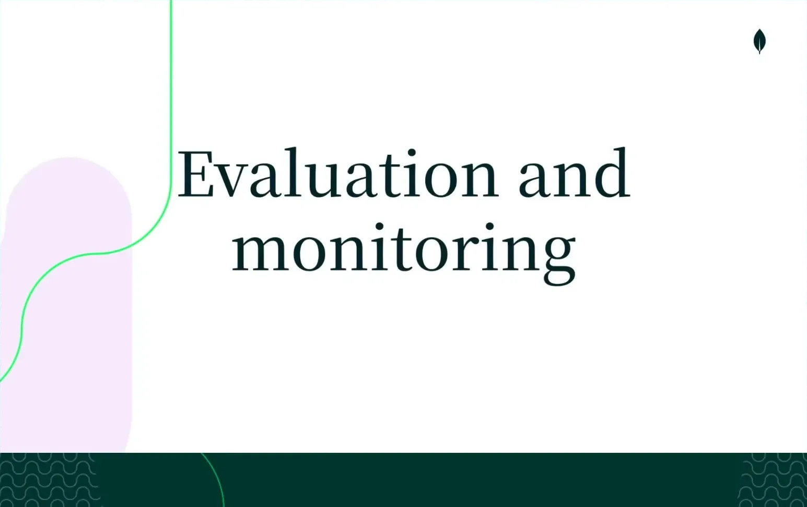
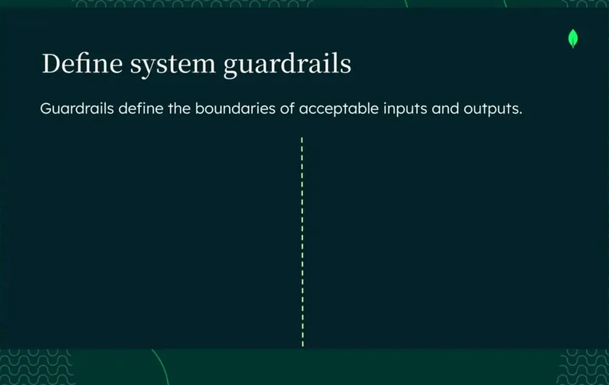
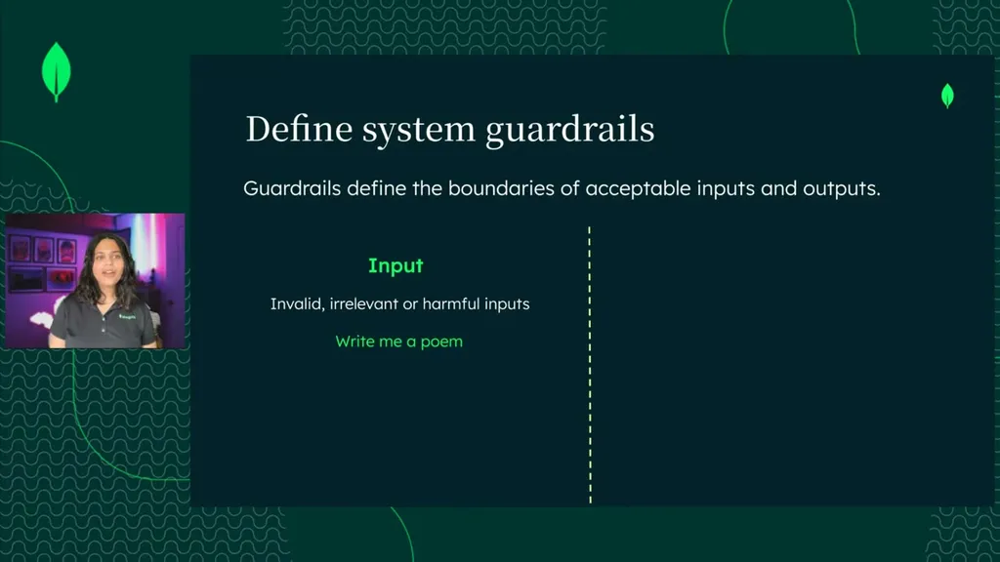
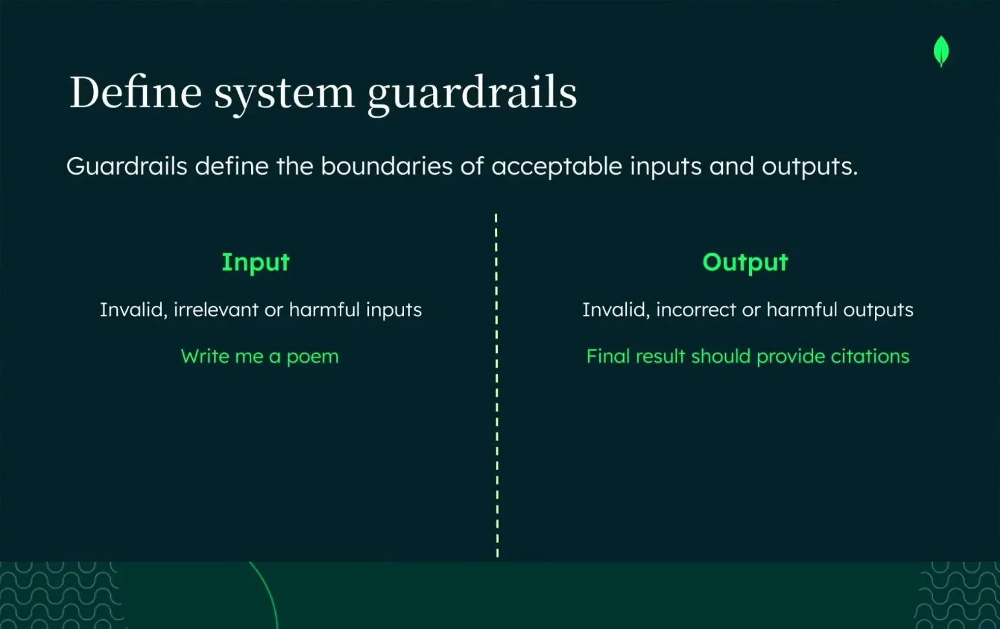
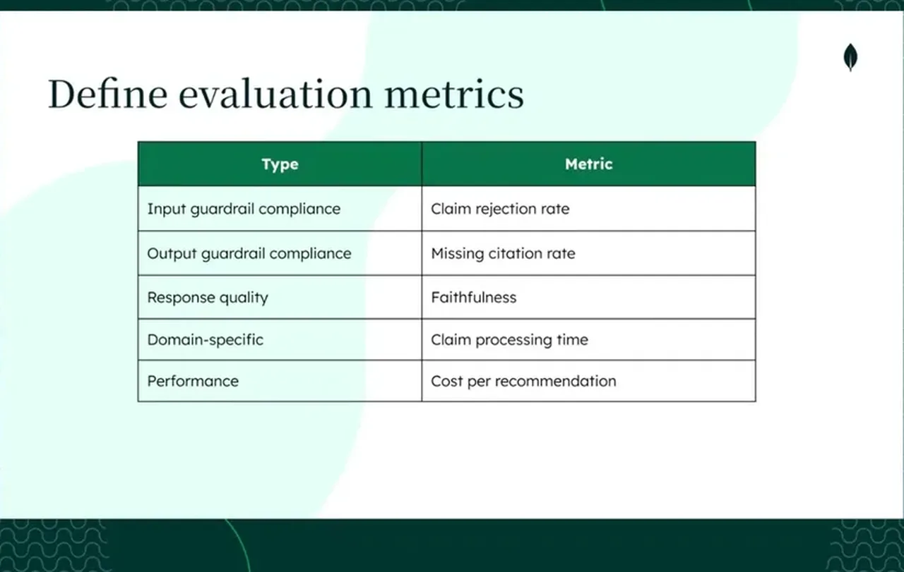
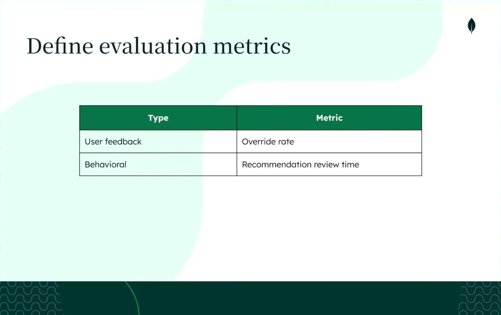
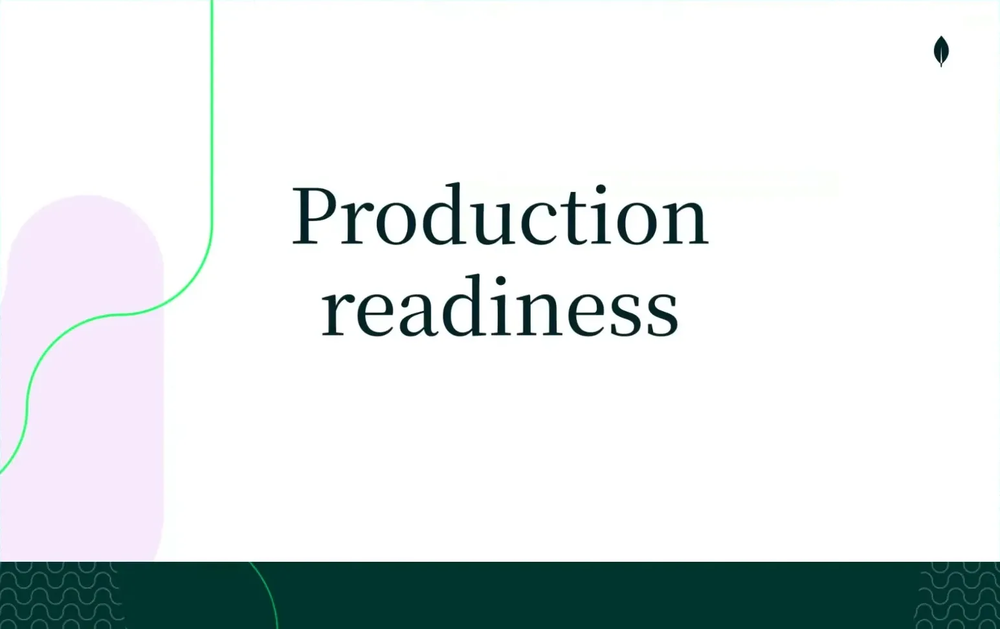
| Stance | Claim | t |
|---|---|---|
| warns | Shipping AI-generated code without defined requirements is dangerous once something real and consequential is at stake, not just a low-stakes hobby project. | 01:02 |
| recommends | Defining product requirements, system design, and evaluation criteria is what lets you trust an AI coding agent is building the right thing. | 01:33 |
| recommends | A business problem statement should not prescribe what the system will be, such as an agent or multi-agent system. | 03:38 |
| asserts | MDB Health's medical reviewers spend an average of 2 days processing claim reviews, 4x the industry standard for non-urgent cases and 12x for urgent ones. | 04:08 |
| asserts | A business constraint in the claims example is that denial decisions must always be reviewed by a human, since some cases can't be fully automated. | 05:41 |
| warns | Jumping straight to building an agent or letting a coding agent pick the architecture risks over-engineering the system. | 11:56 |
| recommends | Start with the simplest system design, evaluate it, find gaps, and iterate from there rather than over-engineering upfront. | 12:28 |
| recommends | Semantic caching can expedite decisions for the claims system by matching against similar past claims. | 26:33 |
| asserts | Thinking deeply about product requirements before generating any code is now the hard part of building an AI product, not the code itself. | 27:04 |
Machine-readable copy embedded in this page (script#ontology) and in the corpus ontology.